[ WSA ]
XEBAC HAT Web Security Auditor
Python-based web review utility for checking common admin paths and publicly exposed backup-file paths, with concurrent checks and JSON/TXT reporting.
PythonHTTPReporting
VIEW REPOSITORY ↗Building practical security tools and clear workflows that help developers understand exposure, strengthen applications, and protect the systems they operate.

A practical, defensive-first approach to application and infrastructure security.
I’m building XEBAC HAT as a security-focused identity and toolkit around defensive server protection, web security review, and Python automation.
The work is centered on understanding how systems are exposed, identifying common configuration and application risks, and turning findings into actionable reports developers can use.
My approach is hands-on: build small tools, test them in authorized environments, learn from results, and improve the workflow.
Areas of active building and exploration. Not a certification or proficiency claim.
Current focus areas, presented transparently without invented employment history.
Developing a Windows-friendly, no-Docker workflow for a defensive server-security platform, with a Python backend, PostgreSQL direction, and an operator-friendly dashboard. The project is under active development.
Tools and experiments focused on authorized security assessment and defensive visibility.
Python-based web review utility for checking common admin paths and publicly exposed backup-file paths, with concurrent checks and JSON/TXT reporting.
In-progress defensive server-security platform concept focused on visibility, operator workflows, and helping developers harden their own systems.
A growing space for safe, authorized experiments around web and API behavior, defensive checks, and repeatable security workflows.
Reusable prompts for defensive review and engineering workflows.
Review my application architecture, trust boundaries, authentication, authorization, input handling, logging, and deployment controls. Prioritize risks and recommend practical mitigations. Assume testing is authorized.
Create a platform-specific server hardening checklist covering accounts, updates, network exposure, secrets, backups, monitoring, and recovery. Include verification steps and safe rollback notes.
Turn these authorized security review findings into a concise report with impact, evidence needed, severity rationale, remediation, and a retest plan. Do not invent evidence.
For project feedback, collaboration, and security-focused discussions.